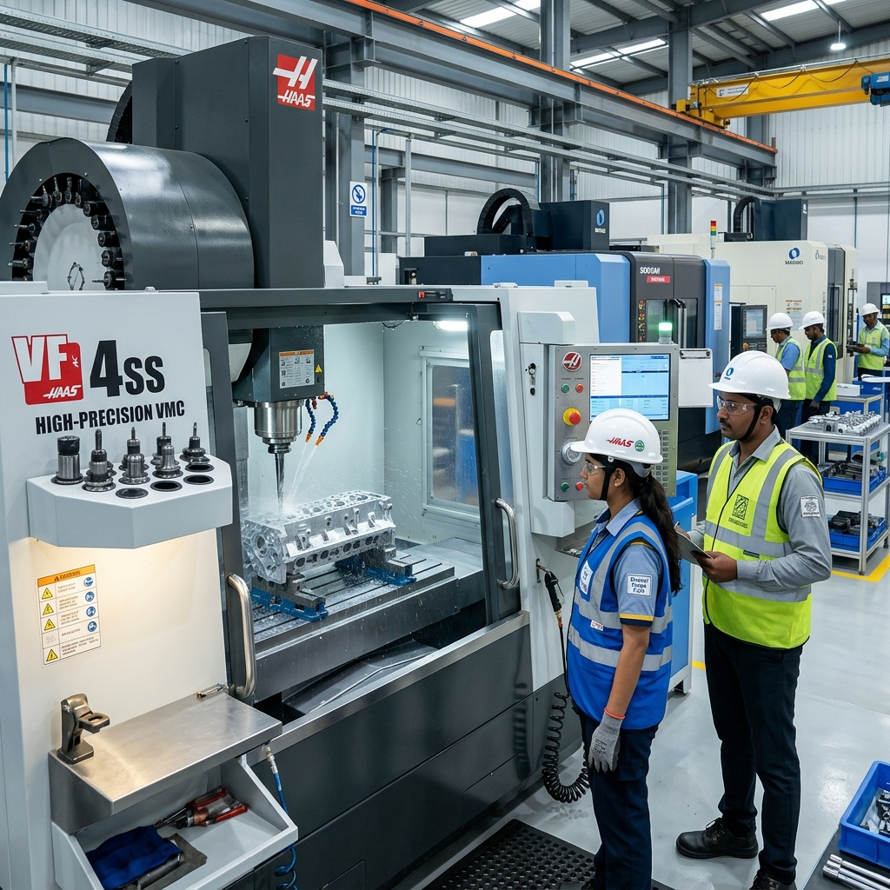
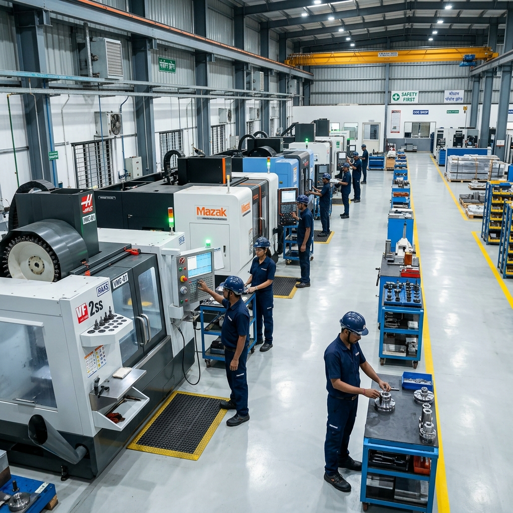

Cost Efficiency
Optimized processes reduce waste and lower production costs.
Guaranteed Quality
Every part is verified to meet your exact specifications.

At Titanium Industries, we specialize in high-precision Vertical Machining Center (VMC) services that deliver micron-level accuracy for the most demanding industrial applications. Our state-of-the-art facility is equipped with advanced MCV 450 and AMS 540-V machines, enabling us to handle complex geometries with absolute precision and consistency.
VMC machining is critical for industries that require tight tolerances and superior surface finishes. Whether it's prototyping or large-scale production, our engineering expertise ensures that every component meets the highest quality standards, minimizing waste and maximizing performance.
In modern manufacturing, precision is not just a requirement—it's a competitive advantage. VMC machining offers versatility and speed, allowing for the efficient production of complex parts across various materials including Titanium, Stainless Steel, and Aluminum.
Achieve micron-level precision for complex components that require exact fitment.
Perfect for both small batch prototypes and high-volume industrial manufacturing.
Delivers excellent surface quality that reduces the need for secondary processing.
We combine advanced technology with rigorous quality control to deliver exceptional results.

Reviewing technical drawings and CAD models for optimal machining paths.
Configuring advanced VMC machines with high-quality tooling for exact results.
100% inspection using Mitutoyo digital tools and CMM for micron accuracy.
Partnering with Titanium Industries for VMC machining ensures reliability, reduced downtime, and high-performance components that drive your industrial success.

Optimized processes reduce waste and lower production costs.
Every part is verified to meet your exact specifications.
We work with a wide range of materials including Titanium, Stainless Steel, Aluminum, Brass, and various industrial alloys.
Our VMC machines and metrology tools allow us to achieve micron-level accuracy (up to 10-20 microns depending on the component).